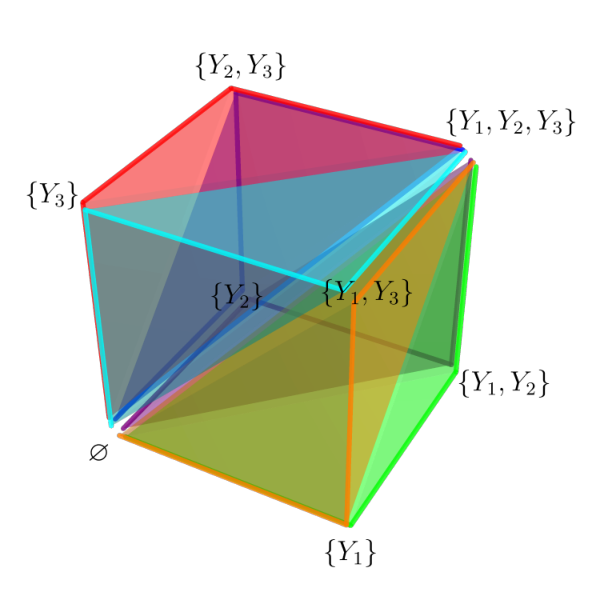

The authors formalized the central maximal-chain identity (eq. 3.6) in Lean 4 as a consistency check, proving it by induction on the list of shifts.
Abstract
We revisit the shifted-tree decomposition formula proposed in our previous work arXiv:2410.17192 for two-site cosmological wavefunction coefficients. For the two-site bubble-like family at arbitrary loop order, we show that the nontrivial central part of the decomposition reduces to an alternating subset sum over shifted diagonal divisors. This subset sum is naturally organized by the Boolean lattice associated with the internal energies, and can be rewritten as a product of commuting finite-difference operators acting on a seed divisor. The finite-difference form first gives a vertex expansion on the Boolean lattice and then leads to an equivalent maximal-chain expansion over complete filtrations from the empty subset to the full set of internal energies. We prove this maximal-chain formula in two complementary ways. Algebraically, the identity follows from a telescoping relation for products of shifted divisors. Geometrically, the finite-difference expression is represented by a cubical integral over the Boolean cube, while the maximal-chain expansion gives its simplex decomposition. After restoring the common two-site prefactor, this maximal-chain expansion reproduces the tubing representation of the loop-level wavefunction coefficient. Thus the shifted-tree decomposition and the tubing construction are two realizations of the same Boolean-lattice identity, providing a concrete geometric interpretation of the all-loop two-site formula.
Problem
A shifted-tree decomposition was previously proposed for two-site cosmological wavefunction coefficients and verified only up to two loops. The goal is to establish it at arbitrary loop order for the two-site bubble-like family and explain its structure.
Approach
The nontrivial central part of the decomposition is reduced to an alternating subset sum over shifted diagonal divisors, organized by the Boolean lattice of internal energies. This sum is rewritten as a product of commuting finite-difference operators acting on a seed divisor, then re-expanded as a sum over maximal chains of the lattice. The maximal-chain identity is proved algebraically by induction with a telescoping relation, and geometrically as a simplex decomposition of a cubical integral over the Boolean cube. The identity is also formalized in Lean 4.

Figure 2 : Example illustration for \ell=2 showing eq. ( 3.6 ) has a natural interpretation on \mathcal{P}(\bm{Y}) , whose Hasse diagram is the 1-skeleton of a 3-cube. Maximal chains connecting \varnothing and \{Y_{1},Y_{2},Y_{3}\}=\bm{Y} are indicated as bold colored lines, with the simplices they span as shaded regions in corresponding color.
Results
The maximal-chain formula holds at all loop orders. After restoring the two-site prefactor, it reproduces the tubing representation of the loop-level wavefunction coefficient, so the shifted-tree decomposition and the tubing construction are two realizations of the same Boolean-lattice identity.